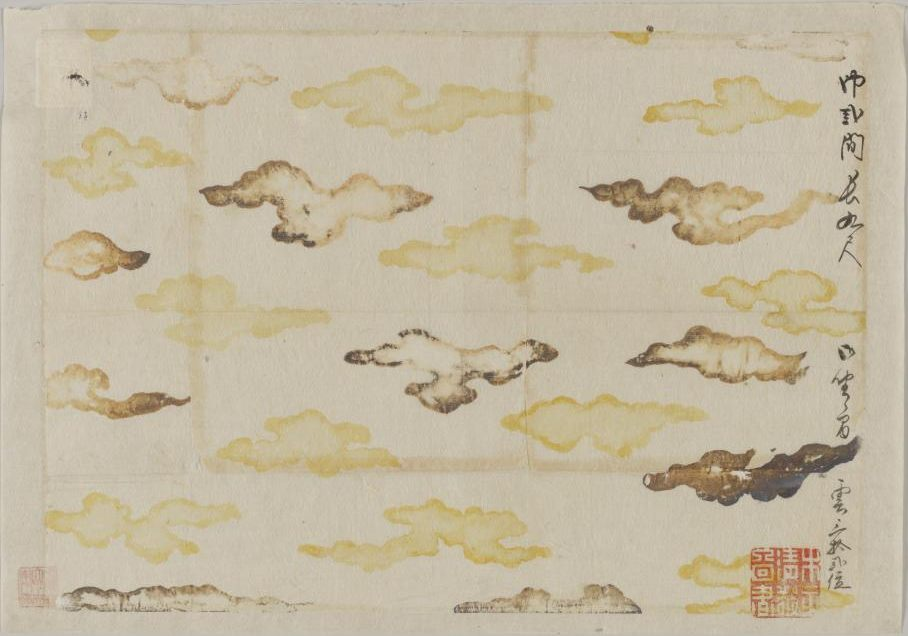

What is it?
Edo karakami is decorated Japanese paper, mainly used on sliding doors and folding screens. It is made in Tokyo and nearby areas. (Kogei Japan, n.d.)
Artisans use carved woodblocks, stencils, and flakes of gold and silver to make the patterns. (Kogei Japan, n.d.)
History
This kind of paper came to Japan from China between 794 and 1185. Craftspeople from Kyoto later took their skills to Edo, the old name for Tokyo. (Nippon.com, 2025)
It became an official traditional craft in May 1999. (Kogei Japan, n.d.)
Why is it endangered?
Many woodblocks were destroyed in the 1923 earthquake, and more were lost in the air raids of 1945. (Nippon.com, 2025)
Later, cheaper machine-printed paper took over. Many workshops closed because nobody was ready to take over from the older makers. (Nippon.com, 2025)
How you can help
- See this paper in hotels, restaurants and showrooms in Tokyo.
- Support companies that train new makers. Tokyo Matsuya started its own production team to keep the skills alive. (Nippon.com, 2025)
- Try a simple block-printing project at school.
Quick facts
- Made in Tokyo, Chiba and Saitama
- Official traditional craft since May 1999
- Woodblocks lost in 1923 and 1945
Sources
- Edo Patterned Paper, Kogei Japan, n.d.
- Breathing New Life into a Thousand-Year Karakami Tradition, Nippon.com, 2025